Two Kinds of Small Keyboards
Tags:
In an earlier post, “Opinion on Small Keyboards and Big Spacebars”, I discussed the design flaws of traditional keyboards. – Mainly, traditional keyboards have big spacebars. Our thumbs are stronger than our pinky fingers, so it would be better to be able to use the thumbs more than the pinky fingers. A large spacebar results in the opposite: our thumbs only get to use one key, and our pinky fingers get used for all sorts of frequently used keys. The other flaws being that the traditional keyboard is asymmetrical, and has a row stagger, etc.
I neglected to explicitly describe the link between “big spacebar is stupid” and “small keyboards are good”.
It happens to be the case that most keyboards which fix those design problems of the traditional keyboard layout are small. – Although there are small keyboards which don’t fix the traditional keyboard layout’s design flaws.
So, I’d suggest this way of categorising (small) keyboards:
Traditional Keyboard Layouts
- Big Spacebar
- Row-Stagger
- Essentially the same as small keyboards on a laptop
Ergonomic Keyboard Layouts
- Many thumb keys
- Ortholinear, Column Stagger (or similar)
There is a third group, of non-traditional keyboards which are also not ergonomic; or with other design incoherencies. I don’t think these are good at all: if it’s got a traditional layout, it’s not good, but it’s understandably bad. (Traditional = retains familiar design elements). So, if a design isn’t traditional, it will take time to get used to; but, effort spent getting used to the keyboard doesn’t result in an ergonomic keyboard.
Techniques of Small Keyboard Keymaps
I distinguish “big spacebar => traditional” vs “many thumbkeys => ergonomic” small keyboards in part because of the techniques small keyboards use:
Small keyboards make use of techniques like “layers”, “tap-hold”, “chords”, etc.
Layers: Layers are a more general mechanism of the “Fn” key, something laptop users are familiar with. e.g. on Macbooks, there are a row of F-keys F1-F12; but these keys also have special functionality such as “screen dimmer / brighter”. By holding the Fn key, the key changes its functionality.
The alternate functionality is considered a “layer” of a keymap; and a key like Fn will momentarily switch keys to use that “layer” of functionality.
Tap-Hold: The keys behaves one way when tapped, and behaves another way when held down. e.g. For programmers, I’ve seen some will change the CapsLock key to “Esc when tapped, Ctrl when held”; Ctrl is a useful key in many shortcuts, and Esc is a useful key in programs such as vim.
Home Row Modifiers: Using Tap-Hold keys to put the modifier keys “Shift, Ctrl, Win, Alt” underneath the home row keys fdsa and jkl;.
Some keyboard layouts don’t allow the possibility of pressing keys like F1-F12, etc., even in layers.
These keyboard layouts aren’t layouts which can be used for serious purposes.
– Whereas, even a small keyboards, even those which lack a number row, will likely still allow users to enter numbers (on a layer).
Albeit, sure, a keyboard without a number row isn’t as easy to use for playing FPS games.
Why Thumb Keys Matter
Thumb keys make a keyboard more ergonomic for two reasons:
Thumb keys allow using keys with the thumb instead of the pinky fingers (e.g. it’s useful to put backspace, enter, tab, escape as well as space on thumb keys).
“Fn” keys on thumbs (especially with tap-hold, so the thumb key can be used for something else too) also avoids having to use the pinky fingers.
Most “traditional” small keyboards I’ve seen have Fn keys which are clearly meant to be pushed using the pinky fingers.
Whereas, with ergonomic small keyboards, the thumbs get to be useful, and allow the pinky fingers to work less.
I’d say essentially the difference is:
‘Traditional’ small keyboards use Fn keys because the keyboard must be smaller. (e.g. on laptops).
‘Ergonomic’ small keyboards are (often) small because they do not need to be bigger; the full functionality of a standard keyboard is within easy reach of the thumbs and fingers.
Example Keymap
Here’s an example of a keymap for a small keyboard with several thumbkeys.
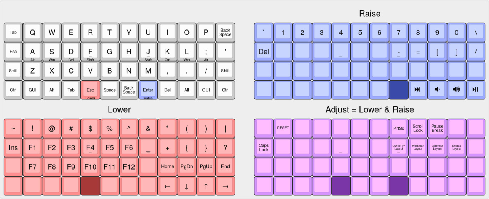
To step through it a bit more slowly:
The keymap retains many mnemonics / spacial similarities to traditional keyboards:
The keys
0-9(Well,1-9, 0) are available in the same column as on a standard keyboard, just brought a row down. (And not staggered).The
~key is still in the top-left.The
-=keys are adjacent to each other.PrintScr/ScrollLock/PauseBrkremain adjacent to each other.Insis ‘above’Del, in the same way the symbols are ‘above’ numbers.
And some things I think are improvements:
The
[]keys have been brought closer to the middle of the keyboard; but are on the same columns as()./\are now adjacent to each other.The cursor keys follow an ‘hjkl’ vim-style setup. The Home/PgDn/PgUp/End follows the same idiom, and is placed in the same columns.
Symmetrical and reduced usage of pinky finger:
The modifier keys (shift/ctrl/win/alt) are available in similar places to a traditional keyboard; but these don’t need to be used, since the keymap has home row modifiers.
Similarly: Backspace, Tab, Esc can be hit with the pinky fingers; but, it’s more convenient to use the thumbkeys provided for this.
Gallery of Examples
Applying the idea of “it’s good to use the thumbs more”/“it’s bad to use the pinky”, I think looking at some examples will help why I think it makes sense to categorise traditional (small) keyboard differently than the keyboards which offer several thumb keys.
Traditional and non-Ergonomic
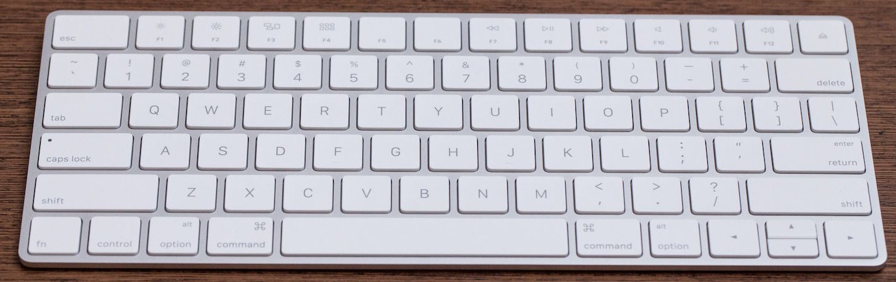
Apple’s keyboard.
This is more/less like a Macbook keyboard.
Note that the Fn key is in the corner, so you’d have to use your pinky finger.
The thumbs pretty much only have the one big spacebar they can press, without moving the hands from home row.
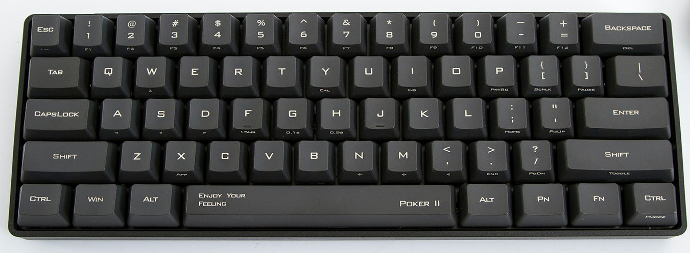
A Poker keyboard, which I understand to be the original ‘small’ mechanical keyboard. – The Fn key is in the corner, so you’d have to use your pinky finger to hold it.
The thumbs pretty much only have the one big spacebar they can press, without moving the hands from home row.
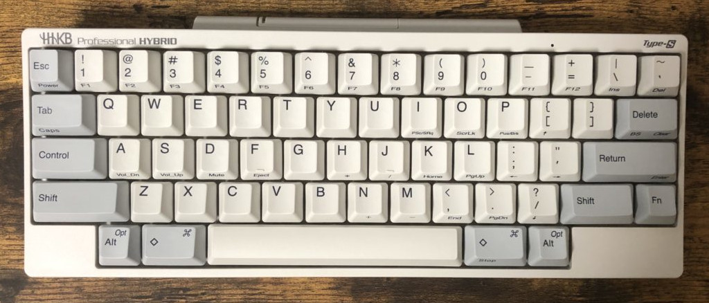
A HHKB (“happy hacking keyboard”). – The Fn key is in the corner, so you’d have to use your pinky finger to hold it.
The thumbs pretty much only have the one big spacebar they can press, without moving the hands from home row.
I don’t think the hacker is going be all that happy given how much the keyboard requires using the pinky instead of the thumb.
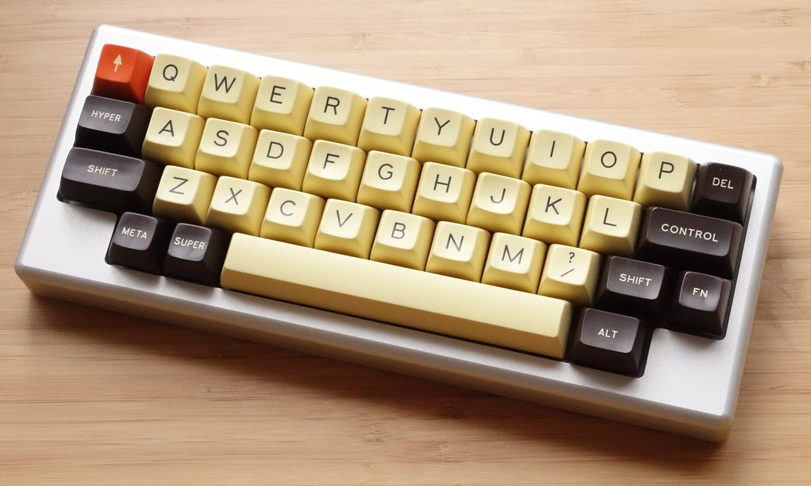
A Daisy keyboard. – The Fn key is to the right of shift, so you’d have to use your pinky finger to hold it.
The thumbs pretty much only have the one big spacebar they can press, without moving the hands from home row.
– This keyboard lacks a number row. I’d describe “keyboards without a number row” as “fashionably small”. With two hands on the keyboard, you’re not missing much by going without a number row. (Although, a number row is more/less essential for playing FPS games). But, it’s trendy to have fewer keys.
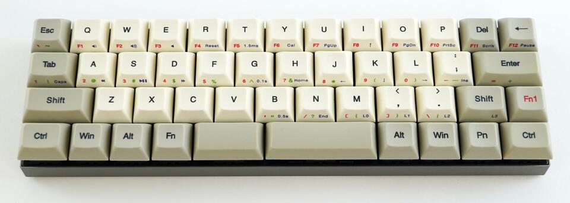
The Vortex Core.
Here, the Fn/Pn keys are almost reachable by the thumb. But, I don’t get the impression the intention was for the thumbs to hit these keys.
Here the thumbs do actually get to hit one key each. – It’s not enough to cover all of “space/backspace/enter/etc.”, but it’s an improvement.
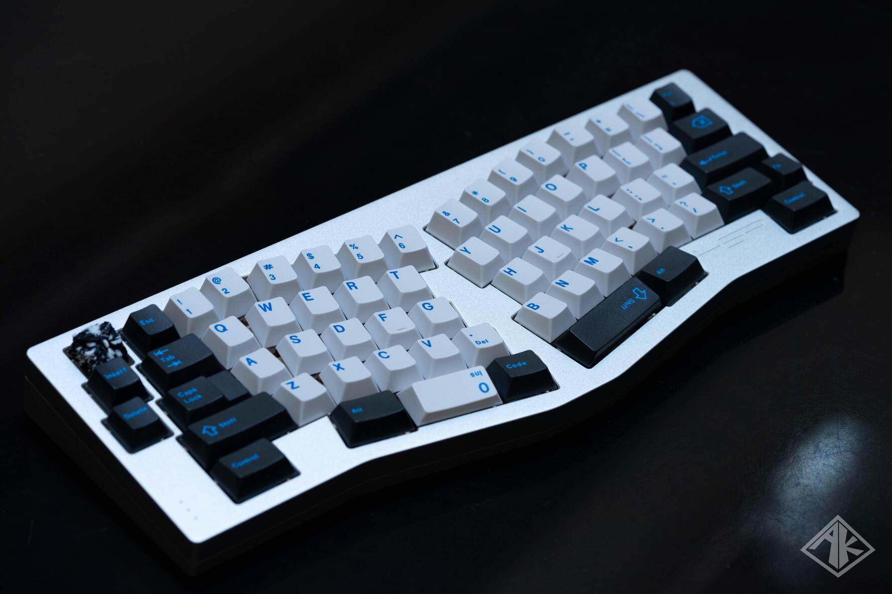
The Alice.
I think the Alice keyboard layout is pretty bad.
It’s apparently different enough from a traditional keyboard layout that some people struggle typing on it. But, it’s also not an ergonomic keyboard layout.
e.g. the 6 key is not above the y key. It’s common to see people put the b key on the right hand side of the keyboard(!!!). It’s not symmetrical.
– Anyway.
The keyboard does offer maybe three whole keys shared between the two thumbs.
And (hard to tell from this picture, but) the Fn key is off in the corner. – The intention is to use the pinky finger for it.
Ortholinear
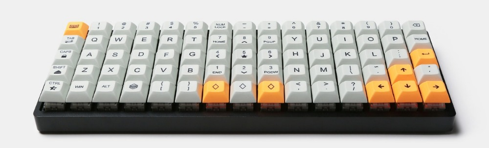
The ID75. This is the same size as the Poker keyboard above.
I don’t know how many keys the Poker has, but this clearly has more.
For the thumbs, there are at least two to three for each thumb.
With that many thumb keys, it’s easy to see how this keyboard could have a good keymap like the example given above.
Here, the user has the alphabetical characters in a pseudo-split arrangement.
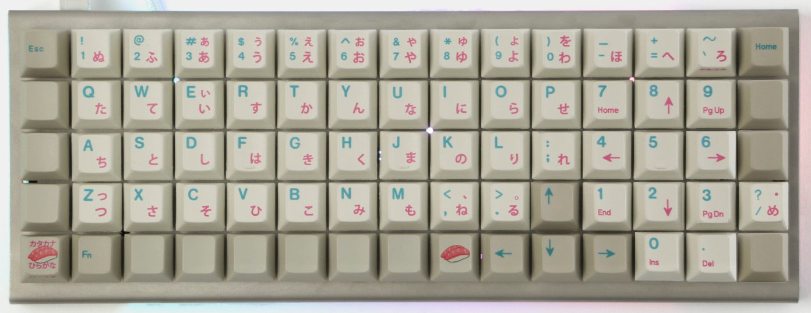
Another 5x15 Ortho. Here, the alphabetical characters are kept together. It’s an option.
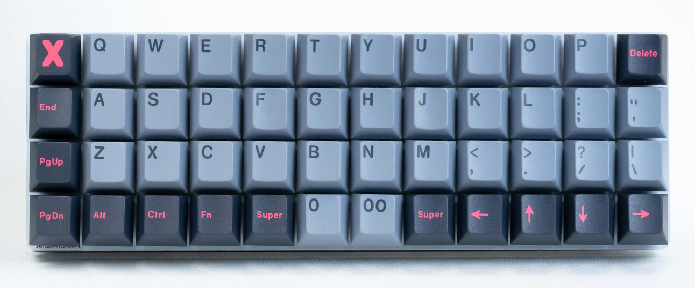
For the thumbs, there are at least two to three for each thumb.
With that many thumb keys, it’s easy to see how this keyboard could have a good keymap like the example given above.
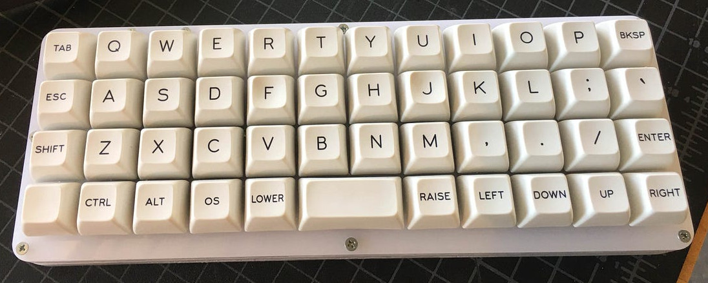
The Planck, with a 2U spacebar.
So, it’s at least one or two keys for each thumb. But, the intention is clearly for the thumb to get used.
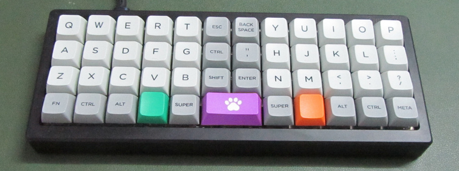
Following the logic of “use the thumb more than the pinky fingers”, one option is to do the same ‘pseudo-split’ arrangement here.
The pinky fingers don’t have to stretch to reach an outer column.
The thumbs get at least two to three keys each.
“Split”: Unrelated to “Traditional vs Ergonomic”
For many, a split keyboard is a big ergonomic improvement over a non-split keyboard.
However, I’d still say that the keyboards fall under either “traditional” or “ergonomic” categories.
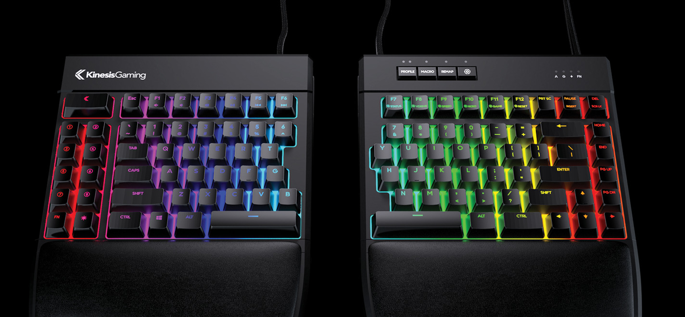
This is clearly ‘just’ a traditional keyboard layout, but split. (It’s only ‘small’ in the sense that there’s no numpad).
There are more thumb keys than a traditional keyboard only in the sense that each thumb now gets to press one key.
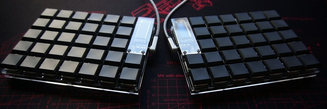
Whereas with this Helix keyboard, the same remarks about the ortholinear keyboards apply here.
The thumb gets to use at least two to three keys each.
Column-Staggered
Most of what I dislike about row-staggered is that it’s asymmetrical. An ortholinear grid just makes more sense as a default.
Many ergonomic keyboards opt for a column stagger.
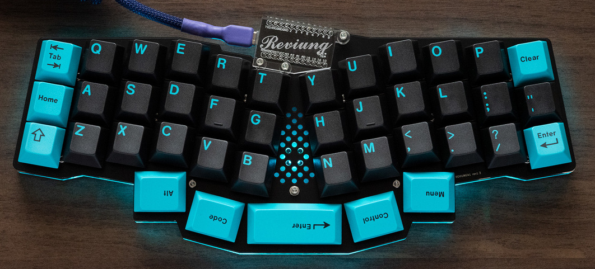
The Reviung 41.
Here, the thumbs can reach the same as the Planck with the 2U spacebar: one to two keys each.
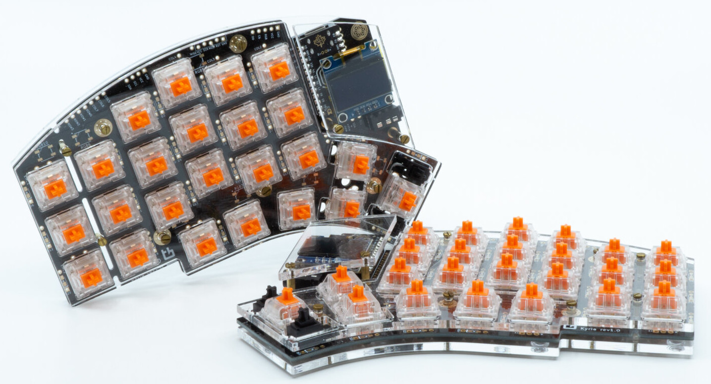
The Kyria.
The thumbs can easily reach two or three keys each; but there are several more keys available to the thumb if the hand moves a bit.
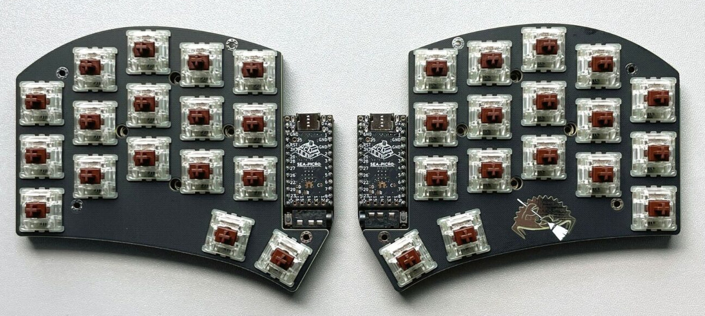
The Ferris Sweep.
I mostly see this keyboard associated with those who advocate for 34-key keyboards.
But, again. The keyboard clearly doesn’t rely on the pinky finger much. The keyboard gives each thumb two keys.
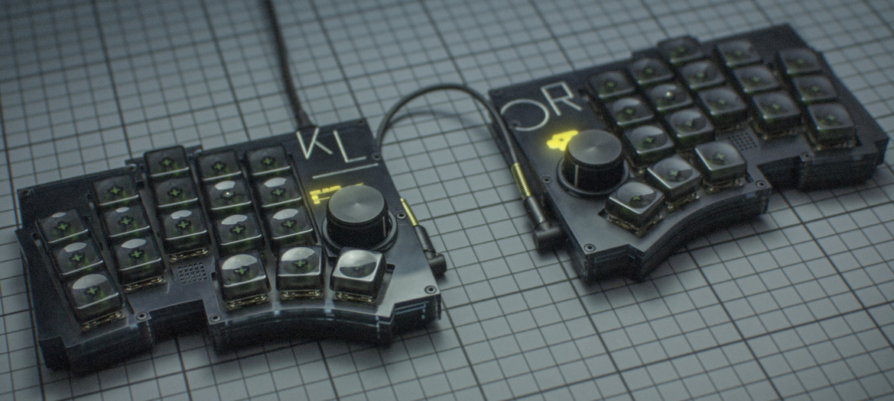
The Klor.
I’m omitting the famous Corne/crkbd from these examples. Many keyboards look like variations of the crkbd.
The Klor is the most interesting keyboard I’ve come across in DIY, split column-staggered family of keyboards. (e.g. It splays its pinky column).
But the same observation applies to these: the thumbs get two-three keys each, and with five columns for the fingers, the pinky finger isn’t used so much.
I Can’t Understand Why Anyone Would Like Row Stagger
I’ve seen that some people prefer the look of the row-stagger keyboard.
I don’t mean those who only know the traditional layout and don’t want to learn ortho. – I mean people who have learned about symmetrical keyboards and still prefer the traditional row-stagger.
I can’t understand why.
I can almost understand someone considering this symmetrical:

But I can’t understand anyone who knows what human hands looks like thinking this layout makes sense:

Or to better illustrate, if you look at just the homing keys (f, j) and the keys above-inner and below-inner for the left hand side:

The distance between ‘jn’ is closer than on an ortholinear board; but the distance between ‘fb’ is way farther.
Key Takeaway from the Examples
Most of the traditional small keyboards really only allowed the thumbs to use one or two keys total, whereas the ergonomic ones allowed at least two thumb keys each.
Most of the traditional small keyboards made strong use of the pinky finger, whereas many of the ergonomic keyboards lacked an extra outer column for the pinky fingers to use.